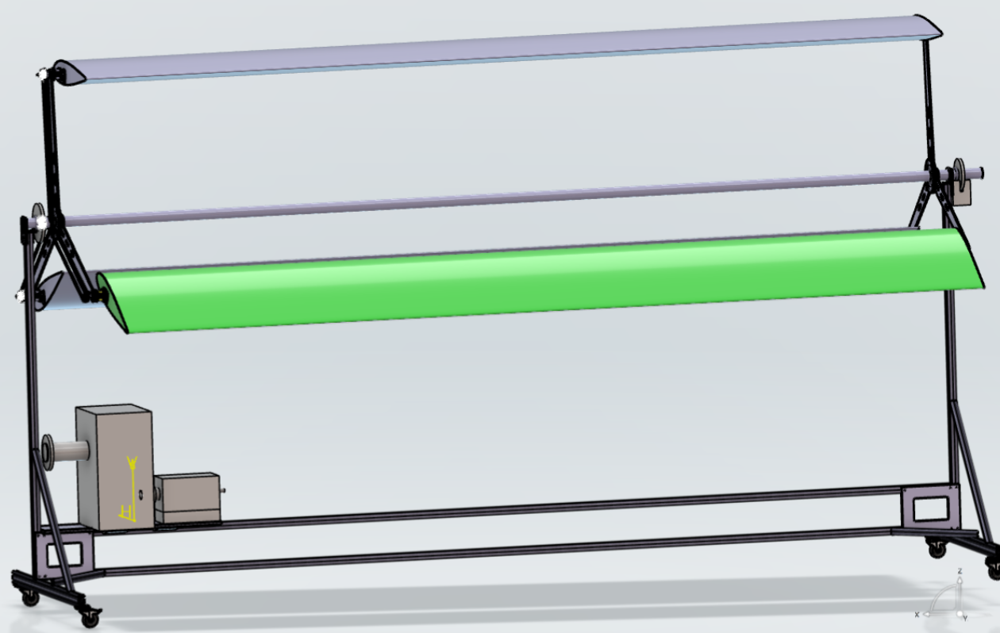
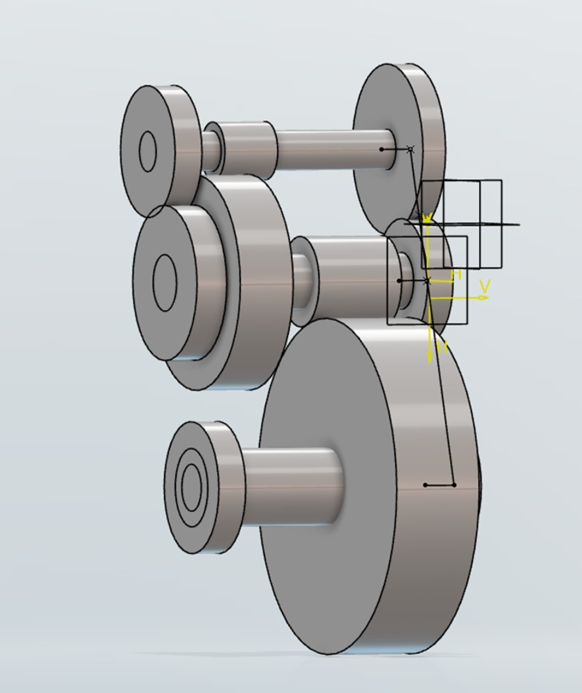
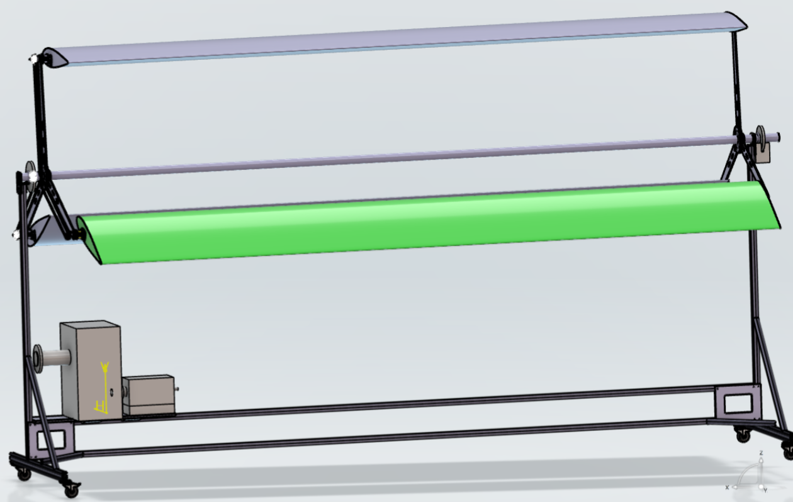
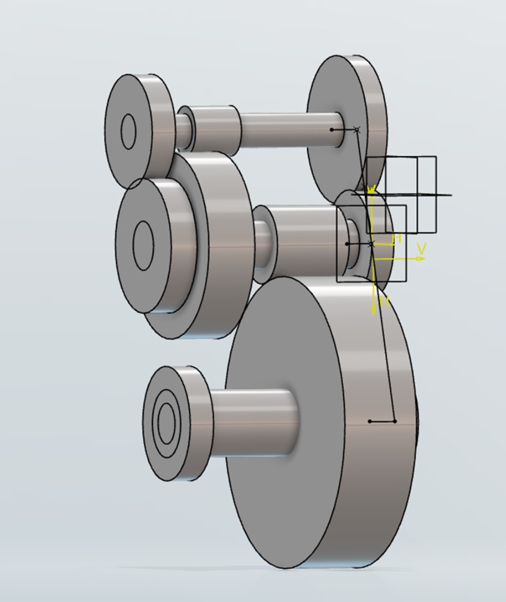
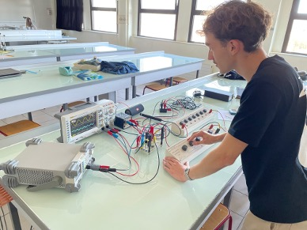
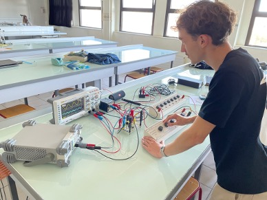

Projects
Here are some of the projects I've worked on.


🦄 3D CAD Project – Fantastical Motorcycle Design
As part of a group CAD project, we designed and assembled a colorful, unicorn-themed motorcycle using advanced 3D modeling techniques. I contributed to the creation of key components including the rear wheel, the front fender, and the front fairing. This involved parametric sweep functions, Bézier curves, multi-section surfaces, and spring generation. The project combined mechanical function with creative design, highlighting both technical skill and aesthetic choices in a collaborative engineering context.
 



🌿 UrbanWind: Smart Micro-Wind Turbine Transmission System
UrbanWind is a compact wind turbine system designed for urban environments, aimed at efficiently converting wind energy into electrical power. The project involved the full mechanical design of the turbine’s transmission system — including the rotor, gearbox, shafts, and bearings — using a combination of analytical calculations, CAD modeling, and numerical simulations.
 

🎧 Wind Noise Reduction in Ski Helmets
This project aims to reduce wind noise in ski helmets while keeping surrounding sounds audible. Using a Lock-In Amplifier built from basic electronic components (filters, multipliers, function generators), the system isolates and removes wind noise based on its frequency. The goal is to test the effectiveness of synchronous detection and explore the possibility of integrating the circuit into a ski helmet.